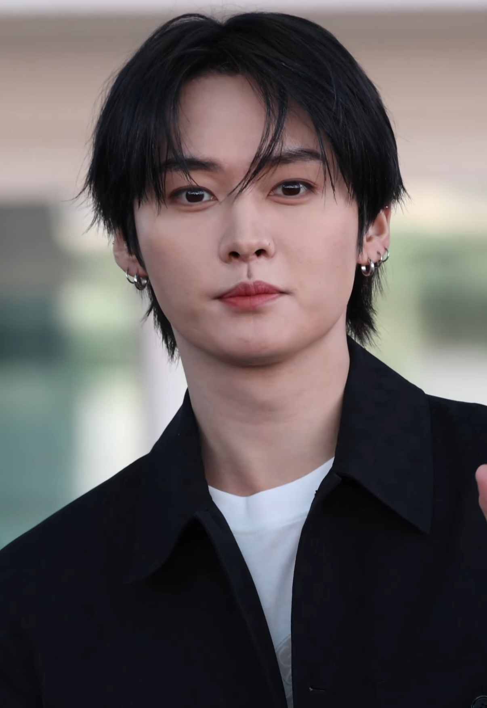
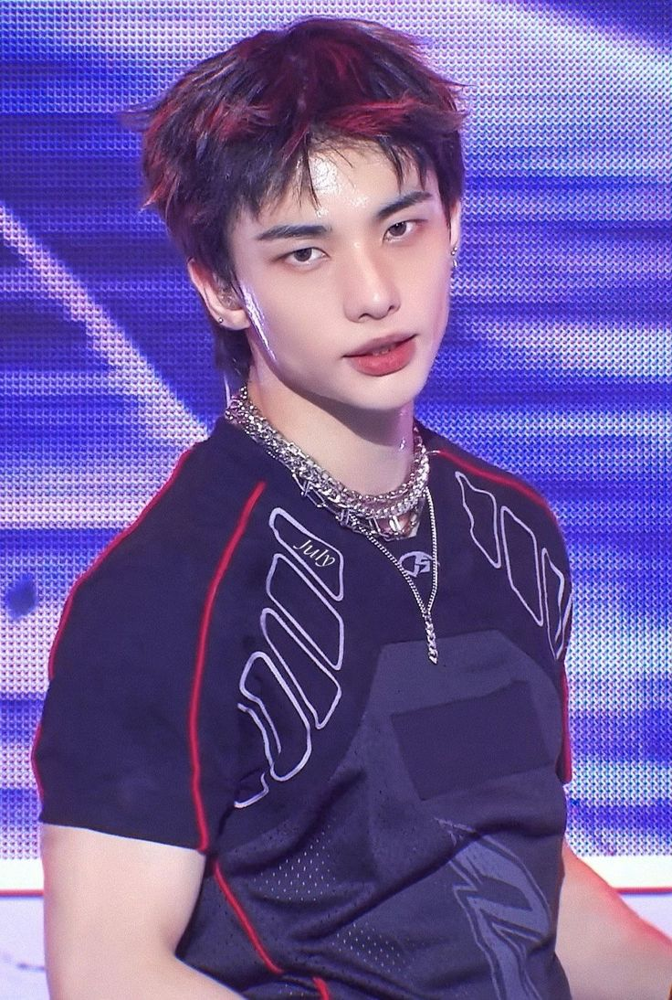
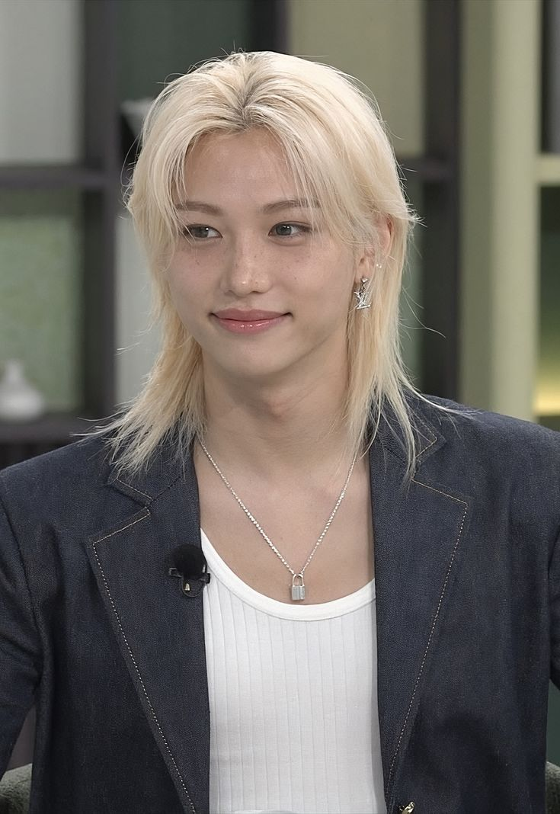
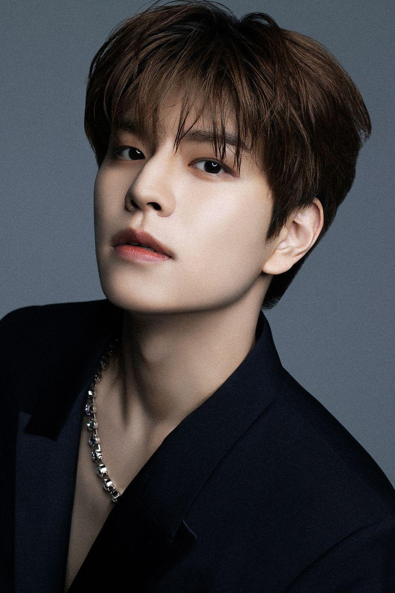
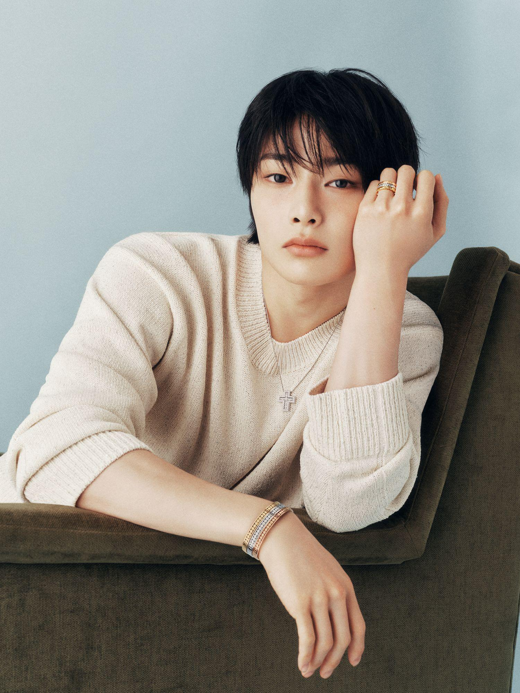

WOLF CHAN

Bang Chan
🐺 Lobo
Bang Chan siempre ha sido asociado con el lobo. Usa el emoji 🐺 constantemente en sus publicaciones y tiene un amor declarado por los lobos. Su carácter protector como líder también evoca a este animal.
|
LEEBIT

Lee Know
🐰 Conejo
El nombre es un juego de palabras: "Lee" + "bit" (mordisco). Sus dientes frontales y su energía rápida y precisa recuerdan a un conejito. Es uno de los personajes más populares del SKZOO.
|
DWAEKKI

Changbin
🐷 Cerdo-Conejo
"Dwaekki" combina "dwaeji" (cerdo en coreano) y "tokki" (conejo). Es una referencia a los apodos cariñosos que el fandom tiene para Changbin, quien es adorablemente rechoncho y tierno.
|
JINIRET

Hyunjin
🦡 Hurón
Hyunjin es comparado con un hurón por su elegancia, su actitud un poco altiva y su belleza llamativa. "Jiniret" une "Hyunjin" y "ferret" (hurón en inglés).
|
HAN QUOKKA

Han
🐾 Quokka
La quokka es un marsupial australiano conocido por ser el "animal más feliz del mundo" por su expresión sonriente. Han, con su personalidad brillante y su sonrisa contagiosa, es perfectamente representado por este animal.
|
BBOKARI

Felix
🐥 Pollito
Felix es comparado con un pollito por su ternura, su energía suave y cálida, y su apariencia adorable. "Bbokari" viene de "bbokki" (sonido del pollito en coreano). Sus lunares en la mejilla están incluidos en el diseño.
|
PUPPYM

Seungmin
🐶 Perro
Seungmin tiene una devoción conocida por los perros y frecuentemente es asociado con ellos por el fandom. "Puppym" une "puppy" (cachorro) y la "M" de su apellido Kim. Es el personaje más expresivo del SKZOO.
|
FOXI NY

I.N
🦊 Zorro
I.N es representado por un zorro por su astucia y su personalidad traviesa. "Foxi NY" combina "foxy" (astuto, como zorro) con "NY" de JeonIN, el nombre real de I.N. Su maknae energy está en cada detalle del personaje.
|